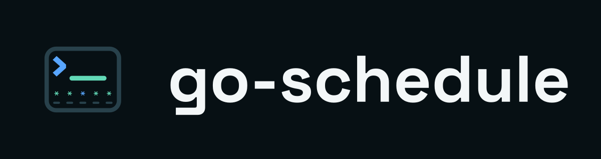
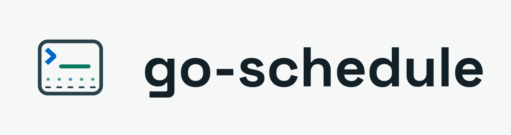
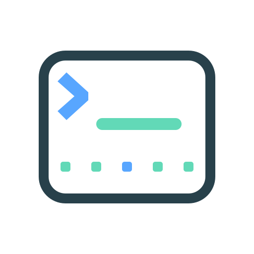

Logo system
Approved lockups



Use the reduced mark at 32 px and below. Keep 32 units of clear space around the full mark. Transparent variants contain no background tile.
Color
Scheduling palette
Use the deeper light-mode accents from the token file for text on Paper. Status always includes a label or symbol.
Typography
Readable at the point of execution
Know the next run.
Body and interface text use Geist. Headings use Space Grotesk.
0 15 * * 1-5at 09:30 every weekdayComponents
State stays explicit
Morning sync
0 9 * * 1-5ReadyStartup check
@rebootNext daemon startIconography
Direct scheduling symbols
Voice
Write like a maintainer explaining a runbook
Use exact expressions, timestamps, timezones, and policy names. State lifecycle boundaries. Skip productivity hype, alarm-clock urgency, and calendar jokes.